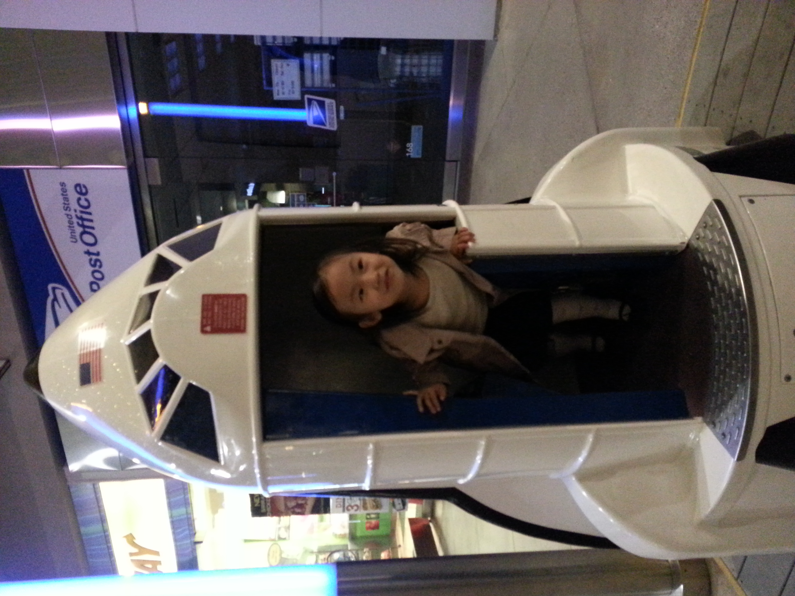
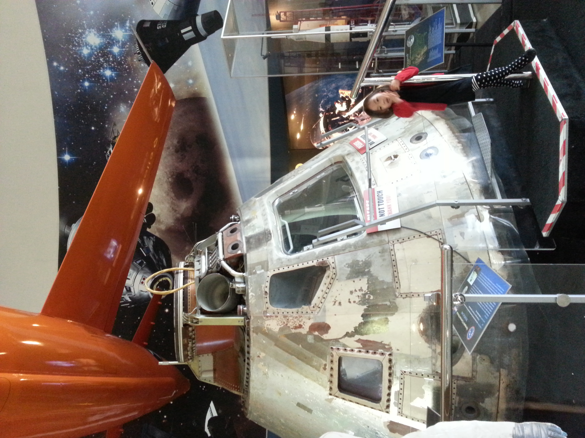
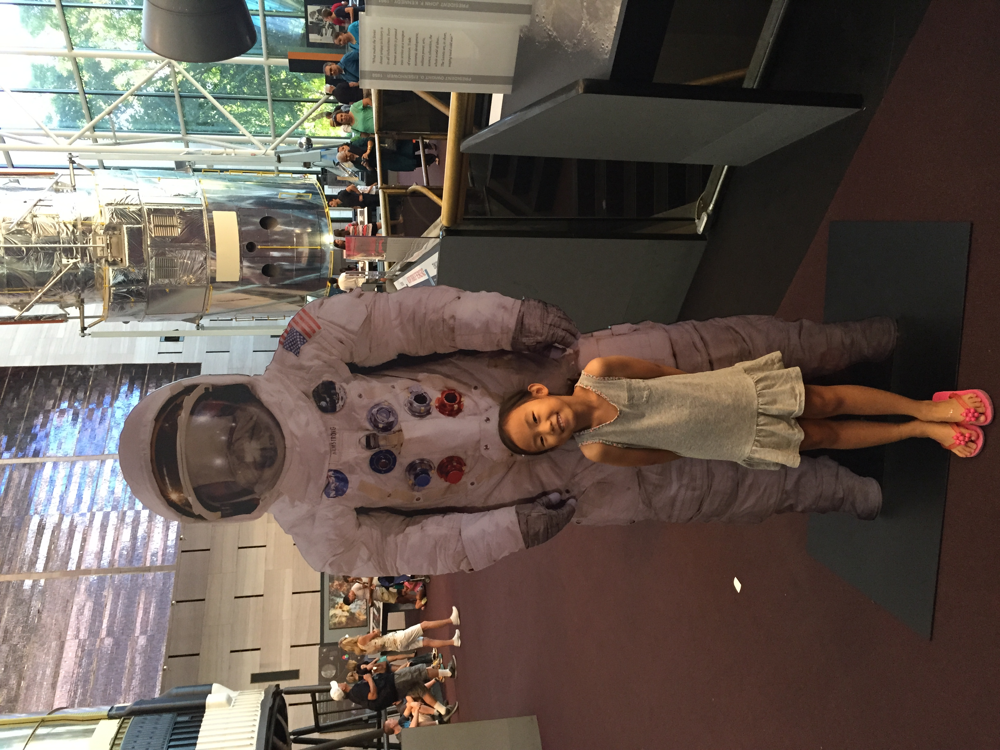

How I started
My fascination with astronomy began long before I knew how to photograph the stars. I spent my childhood running through science museums, seated in a planetarium, and outside under the stars. A telescope I received for Christmas gave me a new way to explore the night sky, turning the distant objects I had read about into things I could search for myself. Visits to planetariums deepened that fascination, but I wanted to experience the universe beyond a screen or a diagram.
Astrophotography became my way of bringing a little of that universe home. On cold winter nights in Connecticut, I venture outside with my iPhone, searching for faint objects hidden among the stars. Capturing the Orion Nebula means waiting in the snow, adjusting my camera, and trying again when the first image comes out blurry. The results aren't always what I imagined, but every photograph teaches me to look a little closer and keep experimenting.
What began as an attempt to capture the night sky has become another way of understanding it. Each image is both a record of what I saw and a reminder of how much remains beyond my reach.


